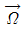
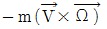
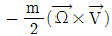
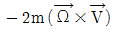
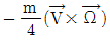
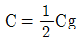

해양환경기사 (2012-05-20 기출문제)
1과목: 해양학개론
1. 다음 중 조력발전의 최적지는?
- 가로림만
- 광양만
- 마산만
- 영일만
(정답률: 78%)

2. 대양의 표층수 대순환은 주로 무엇에 의한 것인가?
- 열염(熱廉)순환
- 풍성(風成)순환
- 열 순환
- 염 순환
(정답률: 82%)
3. 사행경로(사류, meandering currents)에서 작용하고 있는 힘은?
- 관성력, 코리올리힘
- 관성력, 코리올리힘, 바람의 응력
- 관성력, 코리올리힘, 원심력
- 코리올리힘, 바람의 응력, 원심력
(정답률: 62%)
4. 미나마타병과 이타이 이타이병의 원인이 되는 해양오염물질은 각각 무엇인가?
- 납, 구리
- 수은, 카드뮴
- 구리, 수은
- 납, 카드뮴
(정답률: 90%)
5. 다음 중 일반적으로 지각열류량이 가장 작은 곳은?
- 해구
- 해산
- 해양분지
- 대양저산맥
(정답률: 60%)
6. 심해퇴적물 중 제오라이트(zeolite)의 기원은?
- 생물
- 우주
- 화산
- 풍성
(정답률: 57%)
7. 망간단괴에 가장 많이 함유되어 있는 원소는?
- 철
- 니켈
- 구리
- 코발트
(정답률: 79%)
8. 석유가 매장되어 있을 수 있는 기본적인 지층구조 및 퇴적층이 아닌 것은?
- 심해저 점토층
- 석회암
- 사암
- 솔트 돔(Salt dome)
(정답률: 72%)
9. 코리올리 힘의 벡터 표시를 나타내는 식은? (

: 지구의 각운동 벡터, V : 유체의 속도, m : 유체의 질량)



(정답률: 66%)
10. 다음 중 열대저기압과 발생지역의 연결이 틀린 것은?
- 태풍(Typhoon) - 북태평양
- 허리케인(Hurricane) - 북대서양
- 사이클론(Cyclone) - 북인도양
- 윌리윌리(Willy-Willies) - 지중해
(정답률: 85%)
11. 다음 중 우리나라 남해안에 가장 영향을 미치는 해류는?
- 북태평양해류
- 오야시오(Oyashio)
- 중국연안수
- 쓰시마 난류수(Tsushima current)
(정답률: 76%)
12. 생물기원 퇴적물 중 해수에서 직접 침전한 것이 아니라 석회질 퇴적물이 퇴적한 후 속성작용을 받는 동안 Ca이 석회질 퇴적물 혹은 공극수 내에 풍부한 Mg으로 치환되어 생성된 것은?
- Aragonite
- Barite
- Calcite
- Dolomite
(정답률: 87%)
13. 해양의 포면염분 분포에 가장 큰 영향을 주는 것은?
- 증발-강수량의 차
- 바람분포
- 수온분포
- 심해층류
(정답률: 89%)
14. 다음 중 망간단괴가 가장 풍부하게 발견되는 곳은?
- 북대서양 적도 부근
- 남태평양 적도 부근
- 북태평양 적도 부근
- 남극해 주변
(정답률: 75%)
15. 다음 중 하구(estuary)에서 조석의 특징은?
- 낙조류가 일어나는 시간이 짧다.
- 소조 때 강한 낙조류가 생긴다.
- 만조에서 간조까지의 시간차가 짧다.
- 간조에서 만조까지의 시간차가 짧다.
(정답률: 53%)
16. 해수 중 화학원소의 평균 체류시간(mean residence time)의 계산식으로 옳은 것은?
- 제거량/유입량
- 용존농도/총량
- 제거속도/유입속도
- 해수증의 총량/유입속도또는 제거속도
(정답률: 72%)
17. 북반구에서 편향력의 방향이 서 → 동 이라면 지형류의 방향은?
- 동 → 서
- 남 → 북
- 북 → 남
- 서 → 동
(정답률: 64%)
18. 천해파의 경우 위상속도(C)와 군속도(group velocity: Cg) 사이의 관계는?

- C=Cg
- C=√Cg
- C=Cg2
(정답률: 76%)
19. 대양저 산맥에서 일어나는 화산활동을 연구하려고 할 때 다음 중 가장 적합한 지역은?
- 하와이
- 아이슬란드
- 일본 후지산
- 미국 세인트헬렌 화산
(정답률: 78%)
20. 심층류의 주원인은?
- 해수의 밀도차
- 바람
- 조석력
- 심해파
(정답률: 82%)
2과목: 해양생태학
21. 우리나라에서 수괴지표종(indicator species)으로 가장 널리 사용되는 것은?
- 요각류(Calanus)
- 화살벌레(Sagitta)
- 살파(Salpa)
- 스켈레토네마(Skeletonema)
(정답률: 77%)
22. 어류의 새파(Gill raker)가 길고 밀생한 것은 어느 식성에 적응된 것인가?
- 플랑크톤 식성
- 동물 식성
- 식물 식성
- 잡식성
(정답률: 89%)
23. 해수의 BOD 값이 크다는 뜻은 일반적으로 무엇을 의미하는가?
- 유기 오염의 진행을 뜻한다.
- 중금속 오염의 진행을 뜻한다.
- 석유 오염의 진행을 뜻한다.
- 농약 오염의 진행을 뜻한다.
(정답률: 86%)
24. 해양 저서동물과 그 분류상의 위치가 틀린 것은?
- 다모류 – 갯지렁이
- 연체동물 – 따개비
- 극피동물 – 성게
- 절지동물 – 바다가재
(정답률: 83%)
25. 해양생물들의 체내로 흡수된 중금속에 의한 독성을 감소시키기 위한 기작에 대한 설명이 옳은 것은?
- 혼합기능 산소화 효소를 유도
- 금속티오닌 단백질과 결합시킴
- 다량의 수분을 흡수하여 희석시킴
- 입자 상태로 체외로 배출시킴
(정답률: 67%)
26. 해양의 미세화석(Microfossil)을 이루는 무리가 아닌 것은?
- 유공충
- 다모류
- 방산충
- 규조류
(정답률: 77%)
27. 수온은 생물의 활동과 분포에 영향을 끼치는 중요한 요인 중의 하나이다. 이과 관련한 다음 설명 중 옳은 것은?
- 수온약층의 하층부에서는 수온변화가 적어 그곳의 수온은 서식하는 생물에 큰 영향을 미치지는 않는다.
- 산호초류는 일반적으로 15℃ 등온선 내에 그 분포가 국한된다.
- 해양생물의 수명은 일정한 범위 내에서 수온과 정비례하는 경향이 있다.
- 수온이 어느 정도 상승함에 따라 생물의 호흡률과 신진대사율은 모두 감소한다.
(정답률: 60%)
28. 다음 중 해조류의 수직분포에 영향을 주는 가장 중요한 요인은?
- 광선
- 온도
- 파도
- 용존산소
(정답률: 87%)
29. 연안 천해역에서 유기오염이 발생하면 오염원으로부터 거리나 시간이 경과함에 따라 저서동물의 종수, 개체수, 생물량의 특징적인 변동이 나타난다. 이러한 원리를 이용하여 유기오염을 평가하는 방법은?
- Rarefaction 방법
- Log-Normal 방법
- ABC 방법
- SAB 곡선법
(정답률: 76%)
30. 우리나라 주변에 발달한 갯벌 생태계에 대한 설명이 아닌 것은?
- 갯벌 상부에는 염생식물 군락이 발달한다.
- 갱도를 만들거나 직접 매몰하여 생활하는 생물이 대부분이다.
- 띠모양의 생물 분포대가 없다.
- 생물상은 조위와 기질의 입도 조성에 영향을 받는다.
(정답률: 78%)
31. 다음 중 적조생물이 가지는 독소들로 인한 증상과 가장 거리가 먼 것은?
- 질식 및 호흡장애
- 설사 및 구토
- 조직궤사 및 종양
- 기억상실 및 사망
(정답률: 86%)
32. 소하성 회유어종이 아닌 것은?
- 연어
- 은어
- 철갑상어
- 뱀장어
(정답률: 68%)
33. 다음 중 소형플랑크톤(microplankton)에 속하지 않는 종류는?
- 박테리아
- 원생동물
- 식물플랑크톤
- 요각류 유생
(정답률: 77%)
34. 하구역의 생태적 특징에 대한 설명 중 틀린 것은?
- 유기쇄설입자가 어류나 대형저서동물의 먹이가 된다.
- 생활하수가 유입될 경우 유기오염이 될 수 있다.
- 염분농도에 의해 분포가 결정된다.
- 하구역 저서동물은 하구역내에서 생활사를 완결한다.
(정답률: 85%)
35. 다음 중 갑각류의 십각목에 속하는 종류들이 거치는 유생시기가 아닌 것은?
- nauplius
- zoea
- megalopa
- auricularia
(정답률: 75%)
36. 조간대에 서식하는 생물은 노출 시 열의 흡수를 줄이고 흡수된 열의 방출을 위해 여러 가지 적응을 한다. 이 적응에 관련된 설명으로 맞는 것은?
- 체적에 대한 체표면적을 줄이기 위해 몸을 작게 한다.
- 암반과 접촉하는 부위의 면적을 크게 한다.
- 패각의 색깔을 밝게 한다.
- 체내의 수분이 증발되지 않도록 한다.
(정답률: 80%)
37. 다음 고래 중 이빨을 가지고 있는 것은?
- 긴수염고래
- 참고래
- 향고래
- 대왕고래
(정답률: 86%)
38. 동해안 해조류 식생에 관한 설명 중 옳은 것은?
- 북방계 해조가 우세하고 온대계 해조는 미약하다.
- 온대계 해조가 우세하고 북방계 해조는 미약하다.
- 범세계종 해조가 우세하고 온대계 해조는 미약하다.
- 남방계 해조가 우세하고 북방계 해조는 미약하다.
(정답률: 65%)
39. 암반조간대 생물의 대상 분포 이류를 설명하는 이론은?
- 면적가설
- 평행군집 이론
- 안정성-시간 가설
- 임계조석선 가설
(정답률: 74%)
40. 중형저서동물들의 분포는 퇴적상에 따라 우점하는 종류가 달리 나타난다. 다음 중 모래가 우세한 퇴적물에서 영구적인 중형저서동물로서 가장 우점하는 종류는?
- 쿠마류
- 선충류
- 저서성 요각류
- 패충류
(정답률: 78%)
3과목: 해양계측학
41. 용승(湧昇)유역에 대한 설명 중 틀린 것은?
- 플랑크톤이 번식한다.
- 수온이 낮다.
- 용존산소가 많다.
- 영양염이 많다.
(정답률: 59%)
42. 다음 중 만조가 가장 늦게 나타나는 곳은?
- 목포
- 군산
- 인천
- 진남포
(정답률: 71%)
43. 위도 30°에서의 관성주기(Intertial period)는?
- 6시간
- 12시간
- 24시간
- 48시간
(정답률: 71%)
44. 수심이 깊은 심해에 유속계를 계류한 후, 수거할 때 필요한 기기장치는?
- CTD system
- Sonar system
- Echo sounder
- Acoustic release system
(정답률: 79%)
45. 원격탐사의 허색 복합영상자료(False color composit)의 설명으로 옳은 것은?
- 색이 없는 적외선 자료로 임의의 색으로 표시할 수 있다.
- 여러 개의 spectral band를 복합한 digital 자료이다.
- 어떤 spectral band 자료를 그 명도에 따라 여러색으로 표시한 것이다.
- 삼원색을 복합하여 천연색으로 표시한다.
(정답률: 66%)
46. 대조(또는 사리)는 삭, 망과 시기적으로 어떤 관련이 있는가?
- 삭, 망의 1 ~ 3일 전
- 삭, 망의 1 ~ 3일 후
- 삭, 망과 같은 시기
- 삭과 망 사이 중간 시기
(정답률: 76%)
47. 심해저 망간단괴의 성장속도 측정에 사용할 수 없는 방사성 핵종은?
- 10BE
- 14C
- 230Th
- 231Pa
(정답률: 79%)
48. 외양의 바다색이 연안보다 검푸르게 보이는 이유는?
- 장파장(빛)의 산란
- 단파장의 산란
- 단파장의 반사
- 단파장의 흡수
(정답률: 71%)
49. 퇴적물의 입도 분석자료를 정량적으로 분석하기 위해 계산하는 첨도(Kurtosis)란?(오류 신고가 접수된 문제입니다. 반드시 정답과 해설을 확인하시기 바랍니다.)
- 평균입도값을 중심으로 한 분산 정도
- 분포 곡선의 뾰족한 정도
- 평균 입도값을 중심으로 한 대칭성
- 분포 곡선의 표준 편차
(정답률: 45%)
50. 인천항의 비조화상수가 대조승 8.6m, 소조승 6.4m, 평균해면 4.6m 일 때 대조차는?
- 8.6m
- 8.0m
- 6.4m
- 9.2m
(정답률: 70%)
51. 미고결 해저표층 퇴적물을 자연상태 그대로(undisturbed) 채취하는데 가장 좋은 기구는?
- Piston corer
- Vibratory corer
- Grab
- Rotary drilling corer
(정답률: 79%)
52. 1972년 이래 미국 NASA에서 순차적으로 발사한 5개의 NOAA 인공위성은 주로 무엇을 측정하기 위함인가?
- 풍향, 풍속
- 해수 온도
- 해수 색상
- 해안 지형
(정답률: 80%)
53. NOAA 위성의 탐사장비로 현재 가장 많이 쓰이고 있는 장비는?
- MSS
- AVHRR
- SMMR
- SAR
(정답률: 72%)
54. 파가 깨어질 때 일어나는 현상으로 옳지 않은 것은?
- 파장이 짧아진다
- 파고가 커진다
- 주기가 짧아진다
- 연안류가 생긴다
(정답률: 65%)
55. 주위의 퇴적물과 혼합되지 않고 아주 좁은 범위의 시료를 얻고자 할 때 가장 적합한 채니기는?
- Core sampler
- Leger type sampler
- S.K. type sampler
- Dredge
(정답률: 72%)
56. 심해저 시추선의 실험실에서 사용하는 hamilton frame은 다음 중 퇴적물의 무엇을 측정하는 장치인가?
- 음파전달속도
- 잔류자기
- 밀도
- 공극률
(정답률: 58%)
57. 로젯 멀티 샘플러(Rosette Multi-sampler)에 부착할 수 없는 것은?
- 바닥감지기(Bottom detector)
- 전도도센서(conductivity sensor)
- 수심센서(Depth sensor)
- 데이터 터미널(Data terminal)
(정답률: 82%)
58. 국제표준수심을 적합하게 나열한 것은?
- 0m, 5m, 10m, 20m, 30m, 50m
- 0m, 10m, 15m, 20m, 30m, 50m
- 0m, 10m, 20m, 35m, 50m, 70m
- 0m, 10m, 20m, 30m, 50m, 75m
(정답률: 78%)
59. 해저의 저질(底質)을 채취하기 위한 장비가 아닌 것은?
- Dredge
- Piston corer
- Grab sampler
- Pinger
(정답률: 84%)
60. 다음 중 기기와 측정내용의 연결이 옳은 것은?
- 마이크로파 산란계 – 해상풍 측정
- 적외선 방사계 – 염분 측정
- 마이크로파 고도계 – 수온 측정
- 마이크로파 방사계 – 염분 측정
(정답률: 65%)
4과목: 해수의 수질분석
61. pH 측정에 관한 내용 중 틀린 것은?
- pH 미터의 보정은 측정 당일 시료 측정 전에 행하여 져야한다.
- 시료는 유리마개를 닫은 후 24시간 이내에 분석해야 한다.
- 유리전극은 미리 해수에 수 시간 이상 담가두며 pH미터는 전원을 넣어 5분 이상 경과 후 킴와이프 및 실험실용 티슈로 가볍게 닦아낸다.
- 해수의 pH 시료병은 시료의 일부로 2 ~ 3회 충분히 세척한 후 기포가 생기지 않도록 고무관으로 바닥에서부터 천천히 받아 시료가 충분히 넘치도록 한다.
(정답률: 58%)
62. 해저퇴적물의 유해물질 분석 순서가 옳은 것은?
- 추출 – 농축 – 정제 – 분석
- 추출 – 정제 – 농축 – 분석
- 농축 – 추출 – 정제 – 분석
- 정제 – 추출 – 농축 – 분석
(정답률: 66%)
63. 공극수 추출방법에 대한 설명이 틀린 것은?
- 공극수란 퇴적물 입자사이의 빈 공간에 채워져 있는 해수를 말한다. 공극수는 여러 가지 방법으로 분리할 수 있는데 크게 짜내는 방법과 원심분리법이 있다.
- 퇴적물에 외부의 압력을 가하여 공극수를 짜내는 방법이 있다. 이 방법의 장점은 양적으로 충분한 양을 얻을 수 있는 점이다.
- 퇴적물 내 공극수를 질소기체 압력으로 밀어내는 방법이 있다. 이 방법의 단점을 원신분리법에 비하여 복잡하고, 불편한 점이 있다.
- 공극수를 포함한 퇴적물을 원심분리기함으로써, 공극수와 퇴적물 입자를 분리시키는 방법이 있다. 이 방법의 장점은 풍부한 양의 공극수를 얻을 수 있을 뿐만 아니라 시험방법도 비교적 용이하여 널리 사용되고 있다.
(정답률: 57%)
64. 겉보기산소량(AOU:Apparent Oxygen Utilization)의 설명으로 옳은 것은?
- 실측산소량과 이론적 표화 산소량의 차이
- 표층에 용존된 산소량
- 심층에 용존된 산소량과 표층에 용존된 산소량의 차이
- 심층에 용존된 산소량
(정답률: 69%)
65. 탄소량을 측정하는 방법 중 맞지 않은 것은?
- 퇴적물을 고온으로 가열하여 무게차를 측정하는 방법
- 입자들을 일정한 크기별로 분리하여 질량을 측정하는 방법
- 강한 산화제를 이용하여 탄소화합물을 선택적으로 산화시켜 그 무게를 알아내는 방법
- 시약과 반응시킨 후 퇴적물로부터 나오는 이산화탄소를 측정하는 방법
(정답률: 67%)
66. 해수의 대장균군 시험방법이 아닌 것은?
- 최적확수 시험법
- 막여과에 의한 시험법
- 발색제에 의한 시험법
- Microtox bioassay 시험법
(정답률: 80%)
67. 해수중의 Chlorophyll-a 측정에 과한 사항 중 틀린 것은?
- Chlorophyll-a 함량은 식물플랑크톤 생체량을 나타내는 지표이다.
- 해수시료를 유리섬유여과지로 여과하여 아세톤으로 Chlorophyll-a를 추출한다.
- Chlorophyll-a 표준용액으로 작성된 검정선으로부터 농도를 산출한다.
- 아세톤으로 추출된 Chlorophyll-a를 흡광광도법이나 형광법으로 측정한다.
(정답률: 66%)
68. 해수 중 무기수은 분석방법에 관한 설명 중 옳은 것은?
- APDC/DDDC 킬레이트제로 처리한 후 MIBK 유기용매로 추출한 후 불꽃 원자흡광도법으로 측정한다.
- 무기수은을 NaBH4로 처리한 후 냉증기-원자흡광광도법으로 측정한다.
- 무기수은을 과망간산칼륨법으로 산화시킨 후 냉증기-원자흡광광도법으로 측정한다.
- 무기수은을 염화제일주석으로 처리하여 금속수은으로 환원시킨 후 냉증기-원자흡광광도법으로 측정한다.
(정답률: 56%)
69. 표준용액을 제조하기 위해 NH4Cl 3.819g 을 물 1L에 녹였다. 이 용액 10mL를 취하여 1L에 희석하면 1mL 용액 중에 NH4-N는 약 몇 ug-at인가? (단. N = 14, H = 1, Cl = 35.45 이다.)
- 0.7
- 7
- 1.4
- 14
(정답률: 47%)
70. 다음 중 불소(F) 분석 시 알루미늄 및 철의 방해 작용을 제거하기 위한 작업으로 가장 적절한 것은?
- 중크롬산으로 산화시킨다.
- 질산으로 산화시킨다.
- 증류한다.
- 황산은 용액을 넣어준다.
(정답률: 63%)
71. 해수 중의 다음 중금속들 중 다른 원소들과 시료농축방법이 다른 것은?
- 카드뮴
- 망간
- 구리
- 아연
(정답률: 56%)
72. Microtox bioassay 기법의 염수 추출법에 의한 독성 평가 방법의 특징이 아닌 것은?
- 공극수가 제거된 퇴적물의 대상으로 한다.
- 약 2% 염화나트륨 용액을 추출용매로 이용한다.
- 퇴적물내 용존성 물질 및 수용성으로 쉽게 추출되는 독성 물질을 검색한다.
- 전처리 과정이 비교적 단순하다.
(정답률: 49%)
73. 퇴적물의 입도분석 시 습식분석 없이 건식분석으로 충분한 경우는?
- 퇴적물이 뻘질인 경우
- 퇴적물이 사질인 경우
- 퇴적물이 뻘질과 사질로 혼합되는 경우
- 퇴적물이 고화된 상태로 있는 경우
(정답률: 80%)
74. 해양환경공정시험기준에서 부유입자물질(Suspended Particulate Matter)의 정밀도 기준은? (단, 표준편차로 100mg/L 당 ± 양임)
- ± 1mg/L
- ± 3mg/L
- ± 5mg/L
- ± 7mg/L
(정답률: 55%)
75. 최확수시험법에 의한 대장균 시험방법애 대한 설명 중 틀린 것은?
- 정성시험은 추정시험, 확정시험 2단계로 나누어 시험한다.
- 추정시험에서 발효관의 수는 각 희석액에 따라 5개씩 시험한다.
- 추정시험에서 배양하여 발효관에 가스발생이 있으면 대장균균이 존재하는 것으로 간주한다.
- 확정시험에서 무균조작으로 BGLB 배지에서 48±3시간이내에 가스가 발생하면 양성으로 한다.
(정답률: 74%)
76. 특정 유해물질 분석을 위한 전처리 방법으로 틀린 것은?
- 페놀류 : 인상용액으로 PH를 약 4로 조절한다.
- 유기인 : 차광유리용기에서 냉장보관한다.
- PCBs : 질산을 첨가하여 PH2이하 냉장보관한다.
- TBTs : 유리 용기에서 냉장 보관한다.
(정답률: 56%)
77. 표면 흡착이 거의 없으며 거의 대부분의 화학물질에 내성이 큰 시험 용기는?
- Prex 용기
- Quartz용기
- HDPE
- PTFE
(정답률: 61%)
78. 가스크로마토그래피법에 의한 유출유 중 방향족탄화수소류 확인 시험에 필요한 기구 및 기기가 아닌 것은?
- 회전식 진공증발기
- 분액 깔대기
- 멸균기
- 원심분리기
(정답률: 64%)
79. 해수의 인산인 분석과 관계가 없는 시약은?
- 옥살산용액
- 몰리브덴산암모늄용액
- 아스코르빈산용액
- 황산용액
(정답률: 68%)
80. 해수 시료 중의 질산염-질소는 구리 용액으로 처리된 카드뮴 환원관을 이용하는 아질산염-질소로 환원시킨 후 아질산염-질소의 측정원리에 따라 측정한다. 여기에서 구리 용액의 역할은?
- 환원면적을 조절하여 질산염-질소가 아질산염-질소로 환원이 적당하게 일어나게 한다.
- pH를 조절하여 질산염-질소가 아질산염-질소로 환원이 적당하게 일어나게 한다.
- 카드뮴의 환원력이 너무 강하여 이를 감소시키는 작용을 한다.
- 질산염-질소를 아질산염-질소로 환원시키는데 촉매로 작용한다.
(정답률: 73%)
5과목: 해양관련법규
81. 기름유출사고에 대비한 방제선 등의 배치의무 규정에 대한 설명 중 틀린 것은?
- 총톤수 1000톤 이상의 유조선 소유자는 모든 항만에 방제선 또는 방제장비를 비치해야한다.
- 방제선 등 배치의무자가 다른 사람과 공동으로 배치할 수 있다.
- 해양경찰청장은 방제선 등을 배치 또는 설치하지 아니한 자에 대하여 선박입출항금지 또는 시설사용정지를 명령할 수 있다.
- 방제선 등 배치의무자가 직접 배치하지 않고 해양환경관리공단에 위탁할 수 있다.
(정답률: 56%)
82. 해양환경관리법상 해양환경관리업의 등록을 할 수 있는 자는?
- 금치산자 및 한정치산자
- 하선징계를 받은 선장
- 파산선고를 받은 자로서 복권되지 아니한 자
- 해양환경관리업의 등록이 취소된 후 1년이 경과되지 아니한 자
(정답률: 73%)
83. 유류오염손해배상 보장법상 유조선의 선박소유자의 유류오염손해의 책임이 면제되는 경우가 아닌 것은?
- 전쟁・내란・폭동 또는 천재지변 등 불가항력으로 발생한 경우
- 국가 및 공공단체의 항로표지 또는 항행보조시설 관리의 하자만으로 발생한 경우
- 유조선 선박소유자 및 그 사용인이 아닌 제3자의 고의만으로 인하여 발생한 경우
- 도선사의 승선하에 입항하면서 발생한 경우
(정답률: 70%)
84. 해양환경관리법의 목적과 거리가 먼 것은?
- 해양환경의 보전을 위한 기본사항을 정함
- 해양환경의 보전을 위해 유류오염사고시 선박소유자의 책임을 명확히 함
- 해양환경보전 및 관리에 관한 국민의 의무와 국가의 책무를 명확히 함
- 해양환경의 훼손 또는 해양오염으로 인한 위해를 예방함
(정답률: 67%)
85. 유창청소업을 하고자 하는 자가 갖추어야 할 등록기준에 해당하지 않은 것은?
- 총톤수 10톤 이상의 유조선 1척 이상
- 수질환경산업기사의 자격증을 소지한 자
- 총톤수 20톤 이상의 방제작업선 1척 이상
- 가스검지기 1대 이상
(정답률: 55%)
86. 현행 해양환경관리법의 근간이 되는 국제협약은?
- 1954 OILPOL
- 73/78 MARPOL
- OPRC 협약
- UN 해양법협약
(정답률: 80%)
87. 유류오염 손해배상보장법상의 내용과 가장 거리가 먼 것은?
- 유조선이란 산적 유류를 화물로 싣고 운송하기 위해 건조되거나 개조된 모든 형태의 항해선을 말한다.
- 유류가 아닌 일반화물을 운송하는 일반석박에 의한 유류오염 손해는 동법의 적용을 받지 않는다.
- 일반석박이란 유조선과 유류저장부선을 제외한 모든 선박을 말한다.
- 대한민국의 배타적 경제수역에서의 유류오염손해를 방지하거나 경감하기 위한 방제조치에 대하여는 장소에 관계없이 이 법을 적용한다.
(정답률: 62%)
88. 습지보전법상 습지보호지역에서 허용되는 행위는?
- 토지의 형질 변경
- 건축물의 신축
- 자연 재해의 예방을 위한 활동에 필요한 흙, 모래 등의 채취
- 광물의 채굴
(정답률: 84%)
89. 유류오염손해배상 보장법상 유류오염손해배상보장계약에 관한 설명으로 옳은 것은?
- 대한민국 유조선으로 200톤 이상의 산적유류를 화물로서 운송하는 선박소유자는 계약체결 의무가 있다.
- 외국 선박으로 300톤 이하의 산적유류를 화물로서 적재하고 국내항에 입・출항하는 선박소유자는 계약체결 의무가 없다.
- 선박 소유자의 손해배상책임이 발생한 때에는 선박 소유자의 고의에 의한 경우에도 피해자는 보험자 등에 대하여 직접 지급을 청구할 수 있다.
- 유류오염손해배상 보장계약의 증명서를 발급받은 선박에 대한 보장계약증명서의 선내 비치의무는 없다.
(정답률: 70%)
90. 해양투기방지협약상 규제의 대상이 되지 않는 폐기물은?
- 선박으로부터의 폐기물
- 항공기로부터의 폐기물
- 해상 인공구조물로부터의 폐기물
- 해저광물자원의 실험・이용에 관련된 폐기물
(정답률: 55%)
91. 해양환경관리법상 국토해양부장관과 협의해야 할 해역이용협의 대상에 해당하지 않는 것은?
- 수산업법에 의한 어업의 면허
- 공유수면 관리 및 매립에 관한 법률에 의한 공유수면매립의 면허
- 공유수면 관리 및 매립에 관한 법률에 의한 환경관리 해역 지정
- 골재채취법에 의한 바다골재채취의 허가
(정답률: 43%)
92. 유류오염손해배상보장법에 대한 설명 중 옳지 않은 것은?
- 선박 안에 산적유류의 잔류물이 있는 경우에도 유조선에 해당된다.
- 유류오염손해에는 방제조치로 인한 추가적 손실 또는 손해도 포함된다.
- “사고”라 함은 유류오염손해를 일으킬 수 있는 절박한 위험이 있는 사건을 말한다.
- 유류오염손해를 경감하기 위한 제3자의 조치는 방제조치에 해당되지 않는다.
(정답률: 68%)
93. 해양환경관리법의 적용범위가 아닌 것은?
- 환경관리해역 안에서의 해양오염
- 방사성물질과 관련된 해양오염
- 법령에 의해 지정된 해저광구의 개발과 관련하여 발생한 해양오염
- 대한민국 선박에 의하여 행하여진 해양오염
(정답률: 78%)
94. 해양환경관리법상 선박 검사의 종류 중 해양오염방지설비 등을 교체・개조 또는 수리하고자 하는 때에 받아야되는 검사는?
- 임시검사
- 중간검사
- 정기검사
- 임시항해검사
(정답률: 77%)
95. 유엔 해양법협약상 우리나라가 해양환경의 보전 관한 관할권을 갖는 해역 중에서 배타적 경제수역에 대한 해역관리청은?
- 국무총리
- 시・도지사
- 국토해양부장관
- 환경부장관
(정답률: 72%)
96. 해양오염방지협약상 국제기름 오염방지 증서를 필요로 하는 선박기준은?
- 총톤수 100톤 이상의 유조선과 300톤 이상의 비유조선
- 총톤수 150톤 이상의 유조선과 400톤 이상의 비유조선
- 총톤수 200톤 이상의 유조선과 500톤 이상의 비유조선
- 총톤수 250톤 이상의 유조선과 600톤 이상의 비유조선
(정답률: 75%)
97. 유류오염 손해배상청구는 유류오염에 의한 손해가 발생한 날부터 몇 년 이내에 이루어져야 하는가?
- 1 년
- 2 년
- 3 년
- 6년
(정답률: 78%)
98. 해양환경관리법상 해양오염총량 규제 항목이 아닌 것은?
- 부유물질
- 화학적 산소 요구량
- 질소
- 중금속
(정답률: 63%)
99. 유류오염손해배상보장법상 선박소유자는 채권자로부터 책임한도액을 초과하는 청구금액을 명시한 서면청구일로부터 몇 개월 이내에 책임제한절차 개시 신청을 해야 하는가?
- 1 개월
- 2 개월
- 3 개월
- 6 개월
(정답률: 58%)
100. 1972년 채택되어 1975년부터 발효된 폐기물 또는 기타 물질의 투기에 의한 해양오염의 방지에 관한 국제협약으로 2012년 하수슬러지 해양투기금지협약이 전면적으로 발효되기도 한 것은?
- 바젤 협약
- 스톡홀름 협약
- 교토 협약
- 런던 협약
(정답률: 76%)